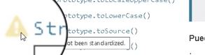

Codigo Opsoleto
La tecnologuía se encuetra en constante evolución, esto incluye a los lenguajes de programación de los cuales cada cierto tiempo sufren actualizaciones en las que se añaden nuevos mecanismos o funcionalidades, se corrigen errores y eliminana elementos opsoletos o en desuso.
A la hora de programar o crear un proyecto es importante estar actualizado con los estandares, elementos y recursos en vigencia, en esta sección se desenglosara todo lo necesario para comprobar la documentación de un lenguaje, asi como saber reconocer el codigo obsoleto y los problemas que se presentan al trabajar con este.
Reconocer el Codigo Obsoleto
Deprecated (Obsoleto)
-
Se trata de la traducción al ingles de la palabra obsoleto, se utiliza en la documentación oficial para indicar aquel elemento o codigo que no se utiliza actualmete, tampoco se recomienda su uso, de este modo sera remplazado en un futuro cercano.
Inutil
-
Se trata de aquellos elementos o codigo desactualizados que ya han sido eliminados, literalmente no es posible utilizarlos ya que sinplemte no funcionan con las tecnologuias actuales.
No Recomendado
-
Se trata de todos aquellos elementos que se desaconseja su uso o es mejor usarlos de forma muy puntual, esto se puede deber a multiples razones, desde un consumo exesivo de recursos, bugs, fallos, inseguridad etc.
El estatus de "no recomendado" no solo se obtiene por que se trata de elementos y codigo viejo y desactualizado.
Bugs y fallos
-
Esto puede deberse a diversas razones, desde tecnologías muy recientes y experimentales hasta a recursos desactualizados con fallos de seguridad o recursos, se trata de elementos o codigo que por una u otra razon pueden presentar problemas al emplearse en ciertas sircunstancia.s
Esta por ser Remplazado
-
Se trata de aquellos recursos, elementos o tecnologuía que en un futuro cercano sera remplazado por otra opción que realizara su función de una mejor forma, un elemento con este estatus no tiene porque tener fallos o estar obsoleto al mometo presente, sin embargo lo que si indica este estatus es que a este elemento le resta una vida utili muy reducuda.
Existe una Mejor Forma de Hacerlo
-
Este estatus no se refiere solo a recursos o elementos de codigo, si no tambien a formas de realizar una acción, esto puede ser por ejemplo que existan dos elementos que comparten algunas de sus funciones, sin embargo uno de ellos consume mucho menos recursos, en este caso en la mayoria de las ocaciones aquel mecanismo con un alto consumo sera obsoleto, ya que su implementación no genera ninguna ventaja.
Efectos negativos Aplicados a Metodos, Clases y Propiedades
Uso Exesivo de recursos
Codigo con Bugs o Fallos
Codigo Innesesariamete largo
-
SEO
Este aspecto se refiere a que los naveadores como Google fomentan el uso de codigo actualizado, por lo que aquellas paguinas cuyo codigo cumple con el standar tienen una mejor posición que aquellas que no.
Del mismo modo que todo lo anterior afecta la experiencia del usuario, resultado en que el SEO (posicionamiento en el navegador) sea peor.
Verificación de codigo Obsoleto
-
Verificar si tiene o usa funciones, metodos, objetos o metodologías obsoletas
Esto se realiza pricipalmete al trabajar con bibliotecas, ya que al tratarse de codigo de terceros que sera incluido en la paguina es necesario revisarlo en detalle.
Nota: 1 de cada 3 paguinas utiliza bibliotecas obsoletas.
-
Verifiacr Sitios Web Basados en Estandares Oficiales
Sitios we como Developer Mozilla y w3schools las cuales son sitios web que difunden las pautas actuales de la documentación oficial de los lenguajes, estas paguinas explican el funcionamiento y uso de todos los elementos de un lenguaje, eso incluye elementos desactualizados, no recomendados, experimentales o fuera del standar, para lo cual se utilizan diferentes tipos de simbolos para indicarlos
Por ejemplo mozilla utiliza los siguites simbolos:
-
El simbolo de pulgar abajo es usado por mozilla para indicar que un recurso o codigo no es recomendado y probablemente se encuentre obsoleto, lo que significa que no se debe usar y es probable que no funcione.
-
El simbolo de basua en mozilla indica que el codigo o elemento se encuetra definitaviamte obsoleto, y es muy probable que no funcione.
-
El simbolo de advertencia signfica que el elemto o codigo no es un estadar, por lo que pese a que funcione y no presente fallas es probable que genere problemas de compatibilidad con navegadores u otros elementos.

-
El simbolo de laboratorio representa tecnologuias esperimentales, lo que significa que no son estandar, es probable que no presenten fallos, pese a esto no se recomienda ya que se encuentran en una etapa muy temprana, sin embargo son recusos en los que se esta trabajando para que en un futuro se puedan añadir al standar.